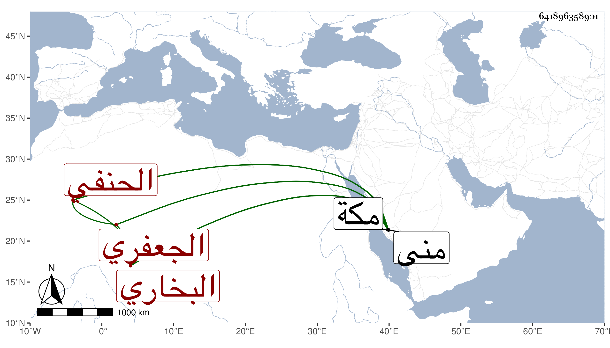

0902Sakhawi.DawLamic.ITO20230111-ara1.EIS1600.641896358901
Biography ID: 641896358901
57
محمد بن محمد بن محمود بن محمد بن محمد بن مودود الشمس الجعفري البخاري الحنفي . استغل ببلاده ثم قدم مكة فجاور بها وانتفع الناس به في علوم المعقول . مات بمكة في العشر الأخير من ذي الحجة سنة اثنتين وعشرين عن ست وسبعين سنة . ذكره شيخنا في إنبائه . ورأيته كتب وهو بمكة على استدعاء في ثاني عشر شهر وفاته وقال الجعفر الطياري النجار يعني الأصل الحافظي البخاري الحنفي وأن مولده في رابع عشرى رجب سنة ست وأربعين وسبعمائة . وله ذكر في الأميني يحيى الأقصرائي وأنه أجاز له في ذي الحجة سنة اثنتين وعشرين بمنى وأنه روى البخاري عن أبي طاهر محمد بن أبي المعالي محمد بن محمد بن الحسين بن علي الطاهري الخالدي الأوشي ووالده أبي المعالي محمد عن السراج عمر بن على القزويني بسنده الذي أوردته في التاريخ الكبير سمع منه بعضه الأمين . ورأيت من زاد محمدا ثالثا في أول نسبه فالله أعلم .
